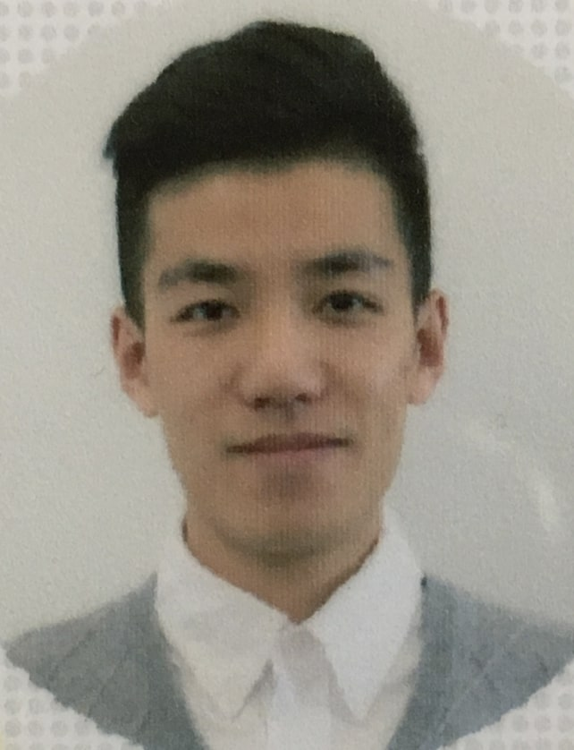

Guorun YangComputer Vision ResearcherSenseTime Group Limited Email: ygriscome [at] gmail.com
|
 |


Biography [CV]
Currently I am a computer vision researcher at SenseTime. Our team is developing fundamental perception algorithms for autonomous driving system. I got my Ph.D. degree from Department of Computer Science and Technology in Tsinghua University in 2019. My supervisor is Prof. Zhidong Deng. Before that, I received the B.E. degree in School of Information Science and Engineering from Lanzhou University.
My research interests include 3D object detection, stereo matching, and their applications on autonomous driving. I'm looking for self-motivated interns in 3D vision and autonomous driving. If you are interested in, please send your CV to my email.
Publications [Google Scholar]
-
* below indicates equal contribution
-
DrivingStereo: A Large-Scale Dataset for Stereo Matching in Autonomous Driving Scenarios
Guorun Yang*, Xiao Song*, Chaoqin Huang, Zhidong Deng, Jianping Shi, Bolei Zhou.
IEEE Computer Society Conference on Computer Vision and Pattern Recognition (CVPR), 2019. -
SegStereo: Exploiting Semantic Information for Disparity Estimation
Guorun Yang*, Hengshuang Zhao*, Jianping Shi, Zhidong Deng, Jiaya Jia.
European Conference on Computer Vision (ECCV), 2018. -
SRC-Disp: Synthetic-Realistic Collaborative Disparity Learning for Stereo Matching
Guorun Yang, Zhidong Deng, Hongchao Lu, Zeping Li.
Asian Conference on Computer Vision (ACCV), 2018. -
Masked Label Learning for Optical Flow Regression
Guorun Yang, Zhidong Deng, Shiyao Wang, Zeping Li.
International Conference on Pattern Recognition (ICPR), 2018. -
End-to-End Disparity Estimation with Multi-granularity Fully Convolutional Network
Guorun Yang, Zhidong Deng.
International Conference on Neural Information Processing (ICONIP), 2017. -
Drivable Road Detection Based on Dilated FPN with Feature Aggregation
Xiaolong Liu, Zhidong Deng, Guorun Yang.
International Conference on Tools with Artificial Intelligence (ICTAI), 2017. -
A Computational Model of Match Decision-Making Problem Using Spiking SHESN with Reward-Modulated Reinforcement Learning
Zhidong Deng, Guorun Yang.
International Conference on Neural Information Processing (ICONIP), 2015.
Experience
SenseTime, Beijing, China
Oct. 2016 – Jun. 2019
Computer Vision Research Intern
Advisor: Jianping Shi
Topic: Stereo Matching, Optical Flow, 3D Point Cloud Processing